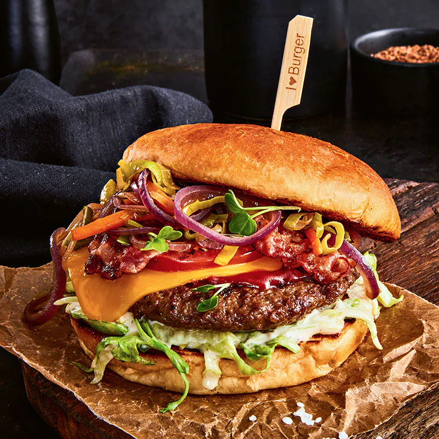

Burger Recipe

Burger with grounded beef, bacon and lots of cheddar cheese
For this burger it is necessary to have the best of beef you can get. Also you need a very good quality of cheese to make this burger perfect. Choose your ingredients wisely.
Ingredients:
- 500g grounded beef
- 4 pcs burger bread
- 4 slices cheddar cheese
- 8 slices bacon
- pickles
- salt & pepper
Steps:
- form patties
- spice up patties with salt & pepper
- roast patties in pan on medium heat
- topping burger bread with favourite sauce, patty, cheese, bacon and pickles
- Bon Appetite!